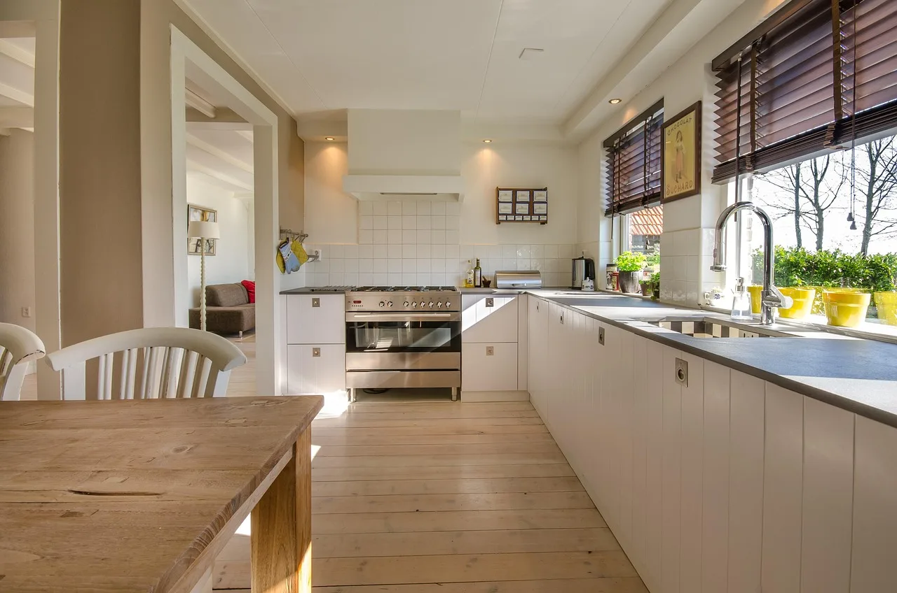
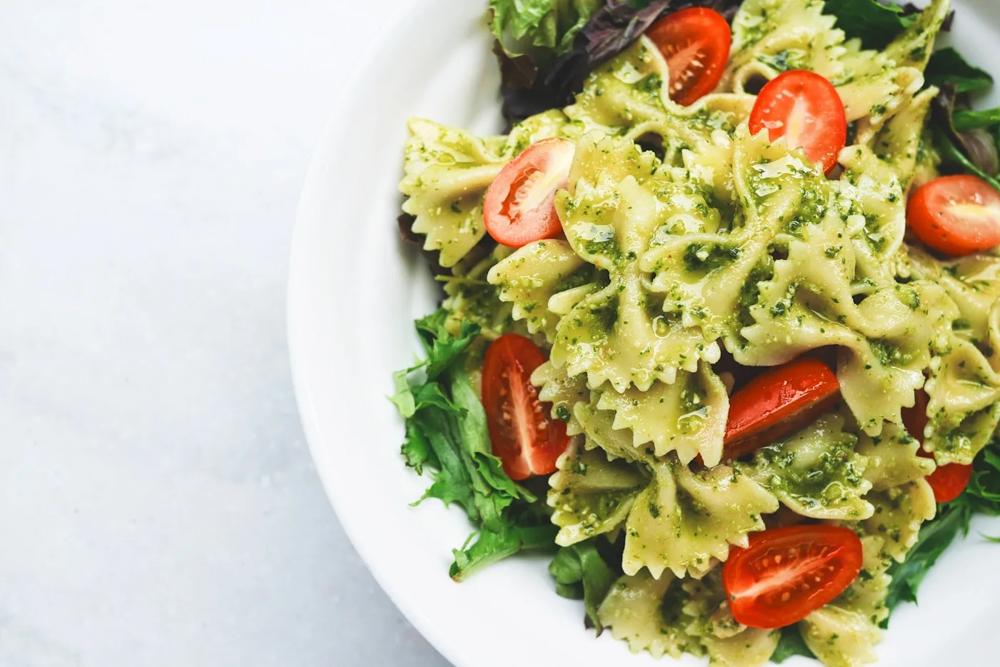

BRASIL · CLÁSSICO DE CASA
Bolo de cenoura com cobertura de chocolate
Massa fofinha batida no liquidificador e cobertura de chocolate que endurece por fora e fica cremosa por dentro — o bolo mais procurado do Brasil.
◷ 55 min · FÁCIL
Dos sabores do Brasil aos clássicos do mundo.
Receitas, histórias e um pouco de inspiração
para transformar o seu próximo prato.

INSPIRAÇÃO PARA COMPARTILHARMassa fofinha batida no liquidificador e cobertura de chocolate que endurece por fora e fica cremosa por dentro — o bolo mais procurado do Brasil.
Leite condensado, chocolate e manteiga mexidos até o ponto de enrolar: o docinho que não pode faltar em nenhuma festa brasileira.
Liso, sem furinhos e com calda de caramelo dourada: o pudim clássico assado em banho-maria, com o passo a passo para acertar a textura.
Tiras de carne seladas, molho de tomate, cogumelos e creme de leite: o estrogonofe à brasileira, servido com arroz branco e batata palha.
Camadas de massa, molho bolonhesa encorpado, molho branco e queijo gratinado — a lasanha de domingo que pode ser montada na véspera.
Massa macia de caldo de frango com batata, recheio bem temperado e casquinha crocante: a rainha dos salgados de festa e de padaria.
O clássico prato de domingo do Rio de Janeiro: feijão preto cozido lentamente com carnes salgadas e defumadas, servido com arroz, couve refogada, farofa e laranja.
O clássico lanche mineiro: crocante por fora, elástico por dentro, feito com polvilho azedo e queijo minas curado.
De onde a gente vem.
E de tudo o que ainda vai descobrir.

O MUNDO TAMBÉM SENTA À NOSSA MESA.Da carbonara italiana ao ramen japonês, descubra pratos que atravessam fronteiras e encontram um lugar na sua cozinha.
Conheça os sabores do mundo ↗Transforme xícaras e colheres em gramas (e o contrário) usando a densidade real de cada ingrediente.
Abrir ↗Informe quantas pessoas vão e quanto tempo dura a festa: a calculadora monta a lista completa.
Abrir ↗Aniversário, chá de bebê ou confraternização: descubra quantos salgados, doces e bebidas comprar.
Abrir ↗Adicione itens (ou envie os ingredientes de uma receita) e a lista se organiza por seção do mercado.
Abrir ↗Vários cronômetros ao mesmo tempo, com nome e alarme. Mantenha esta aba aberta enquanto cozinha.
Abrir ↗Sem ideia? Escolha alguns filtros e deixe a sorte decidir o cardápio de hoje.
Abrir ↗


.jpg?width=500)